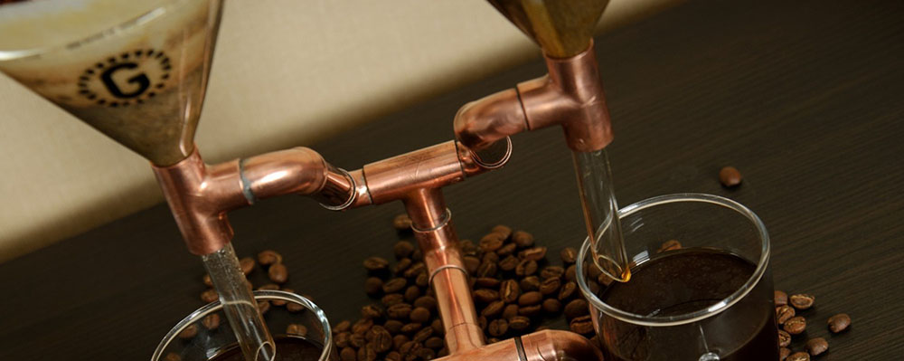

About Us
Our Cafe
In 2015 we opened a small working space where we could develop our idea to build a roaster. We purchased an espresso machine and tried to make some seating so that we could occasionally serve a cup of coffee to any GUEST – we were hoping this would cover the electric bill…
As it turned out, we were visited by so many incredible people on a daily basis and eventually this thing grew into one of Wroclaw’s small coffee houses.
Unfortunately, after trying many different ways, we were forbidden from roasting INSIDE the cafe because the damn neighbor upstairs wasn’t too thrilled about getting smoked out on a daily basis, so we decided to relocate by the end of June 2017 – exactly two years after opening our doors.
FORTUNATELY we found a great place to roast while looking for another café, this was at EkoBazaar (a local farmers market) in Wroclaw.

Our Company
With a lot of help, we built a roaster from scratch and began roasting our own beans within a little over a year of opening.
We roast fresh coffee on a daily basis for our Guests and Clients – this is our lifeblood.
We also make customized Coffee Drippers for use at home, cafes, bars, restaurants, hotels, or even for offices.
Last but not least, in the summer of 2016, we began production of Nitro Coffee on a medium size scale. With a capacity of 180 liters a day, we supplied not only our cafe, two other cafes, but also a major IT company with a branch operating out of Wroclaw.
As time goes on, we work to improve and possibly expand on our products and services.